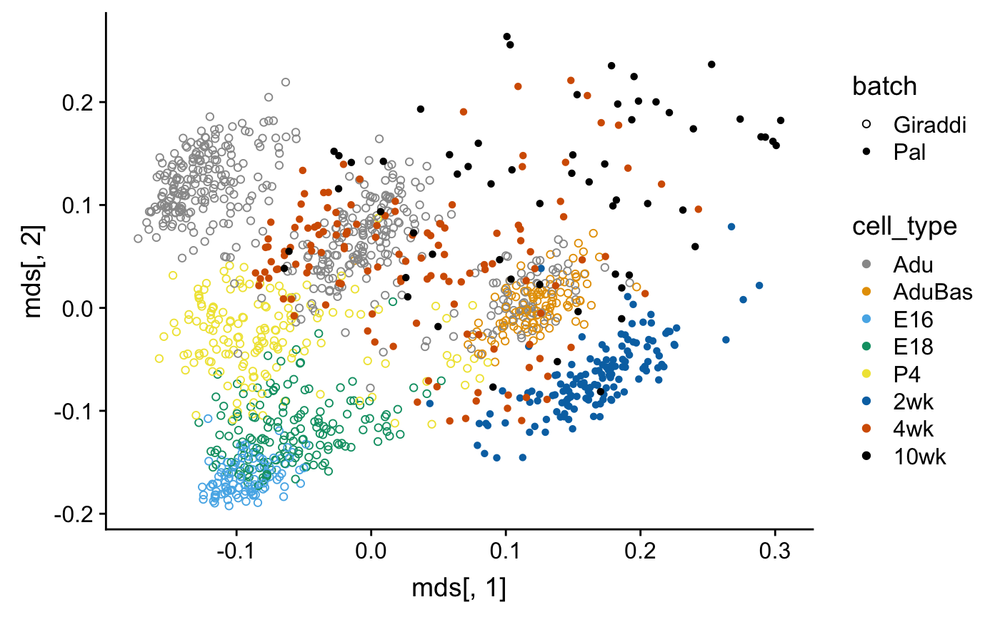
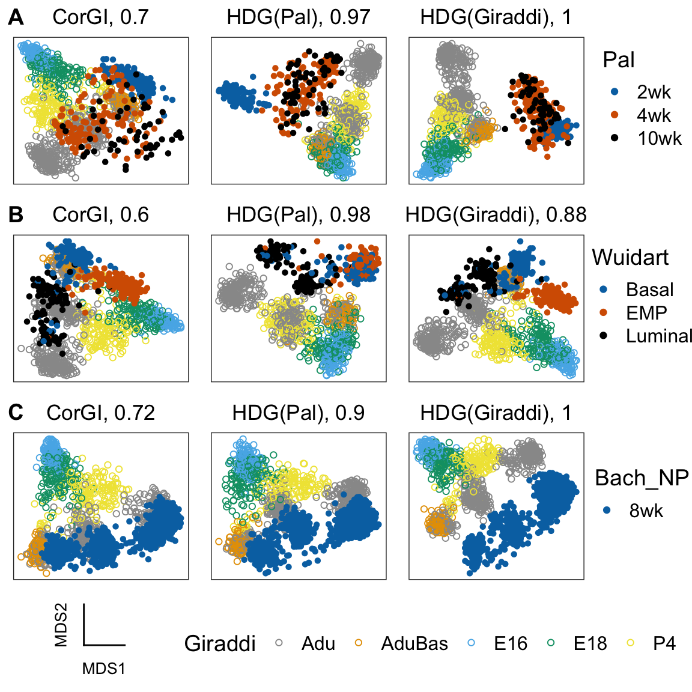
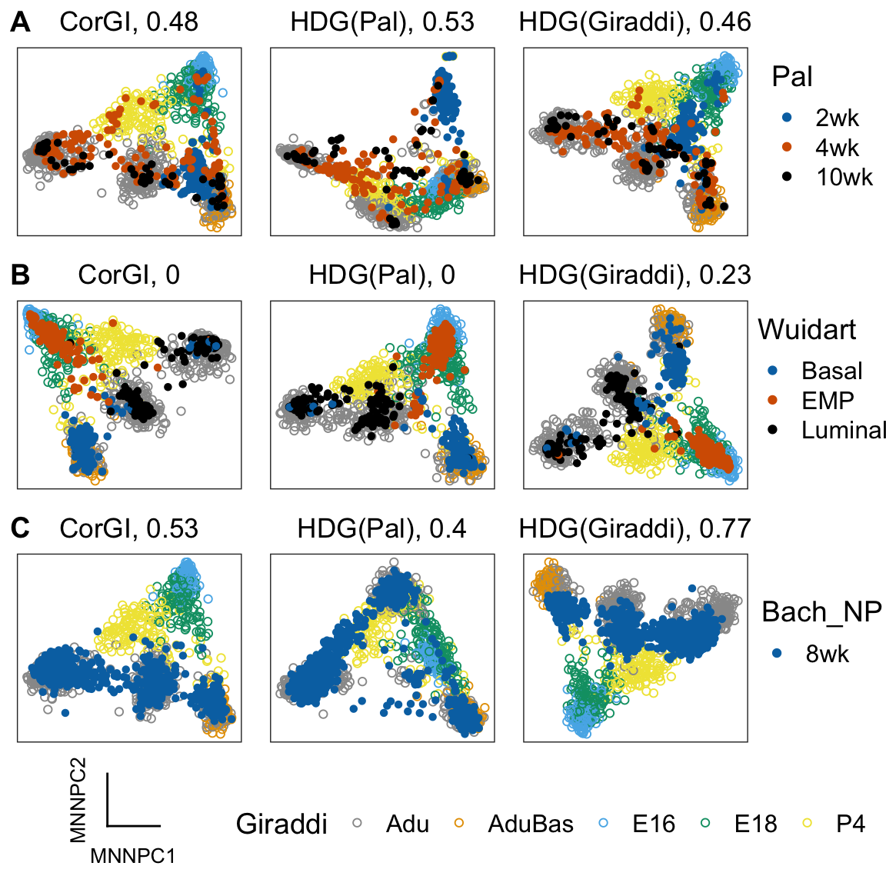
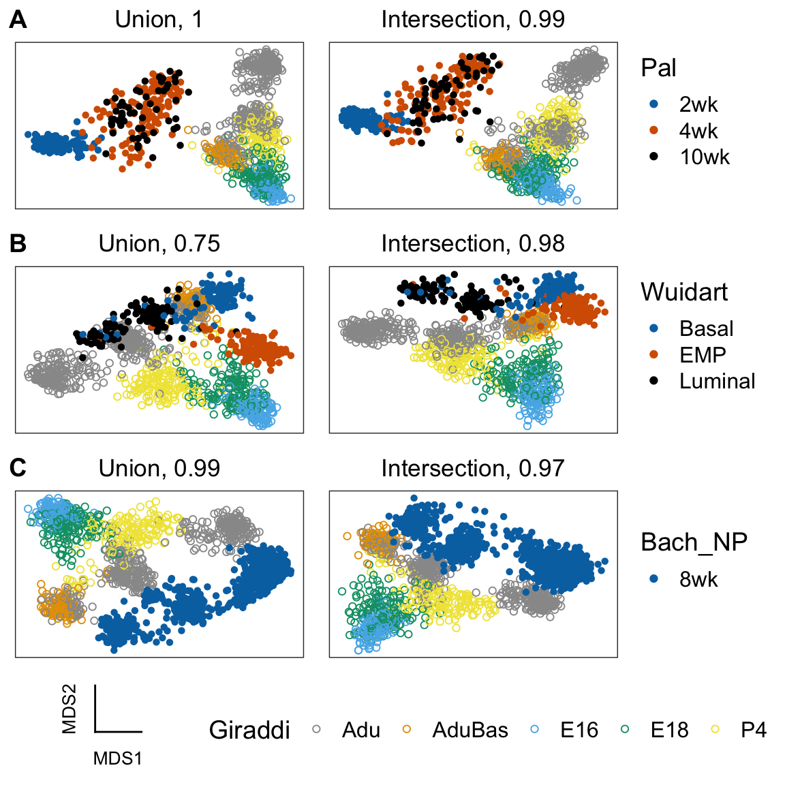
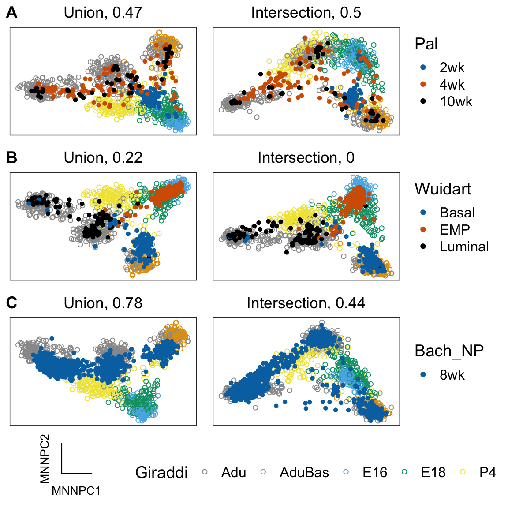

mammary-gland-devel.Rmdlibrary(corgi)
library(scmap)
library(knitr) # for printing nice looking tables
library(ggplot2) # for creating pretty plots
library(cowplot) # for creating panel of plots
library(forcats) # for concatenating factors
library(scmap) # for the compared feature selection method
library(dplyr)
library(scran)
library(Matrix)con <- gzcon(
url("https://www.ncbi.nlm.nih.gov/geo/download/?acc=GSE95434&format=file&file=GSE95434%5FGeneCounts%2Etxt%2Egz")
)
txt <- readLines(con)
pal_raw <- read.table(file = textConnection(txt),header = T)
pal_raw[1:10,1:6]
pal <- SingleCellExperiment(assay = list(counts = as.matrix(pal_raw[,3:ncol(pal_raw)])))
dim(pal)
pal_entrezGeneID <- pal_raw[,1]
pal$cell_type <-
colnames(pal) %>%
lapply(FUN = function(x) strsplit(x,split = ".",fixed = T)[[1]][1]) %>%
lapply(FUN = function(x) gsub(pattern = "X",replacement = "",x = x)) %>%
unlist %>%
factor(levels = c("2wk","4wk","10wk"),ordered = T)
table(pal$cell_type)
# Change the names from entrezgene to mgi_symbol
features <- pal_entrezGeneID
library(biomaRt)
mart <- useMart("ensembl",
dataset = "mmusculus_gene_ensembl",
host="www.ensembl.org" )
out <- getBM(attributes = c("entrezgene", "mgi_symbol"),
values = features,
mart = mart,
filters = "entrezgene")
head(out)
dim(out)
out$is_unique <- !duplicated(out$mgi_symbol)
out$is_nonempty <- out$mgi_symbol!=""
out_unique_nonempty <- out %>% filter(is_unique) %>% filter(is_nonempty)
# Just to be sure
any(duplicated(out_unique_nonempty$mgi_symbol))
any(out_unique_nonempty$mgi_symbol=="")
# Transform to MGI symbols
genes_use <- which(pal_entrezGeneID %in% out_unique_nonempty$entrezgene)
pal <- pal[genes_use,]
rownames(pal) <-
plyr::mapvalues(
x = pal_entrezGeneID[genes_use],
from = out_unique_nonempty$entrezgene,
to = out_unique_nonempty$mgi_symbol
)con <- gzcon(
url("https://www.ncbi.nlm.nih.gov/geo/download/?acc=GSE111113&format=file&file=GSE111113%5FTable%5FS1%5FFilterNormal10xExpMatrix%2Etxt%2Egz"))
txt <- readLines(con)
giraddi_raw <- read.delim2(file = textConnection(txt))
head(colnames(giraddi_raw))
head(giraddi_raw$gene_id)
head(giraddi_raw$X) # the "X" column is where the MGI symbol for the gene names are stored
# remove duplicated MGI symbols
giraddi_raw <- giraddi_raw[!duplicated(giraddi_raw$X),]
# remove empty string names
giraddi_raw <- giraddi_raw[giraddi_raw$X!="",]
giraddi <- SingleCellExperiment(assay = list(counts = as.matrix(giraddi_raw[,4:ncol(giraddi_raw)])))
rownames(giraddi) <- giraddi_raw$X
giraddi$cell_type <-
lapply(strsplit(colnames(giraddi),split = "_"),function(x) x[1]) %>%
as.character() %>%
as.factor()
levels(giraddi$cell_type)
giraddi$cell_type <- plyr::mapvalues(
x = giraddi$cell_type,
from = levels(giraddi$cell_type),
to = c("Adu", "Adu", "AduBas", "E16", "E18", "P4")
)shared_genes <- intersect(rownames(pal),rownames(giraddi))
pal <- pal[shared_genes,]
giraddi <- giraddi[shared_genes,]
length(shared_genes)
#> [1] 15314Filter out cells where less than 5% of the genes are expressed
table(pal$cell_type)
#>
#> 2wk 4wk 10wk
#> 144 136 66
pal <- pal[,colMeans(counts(pal)>0)>0.05]
table(pal$cell_type)
#>
#> 2wk 4wk 10wk
#> 142 133 59table(giraddi$cell_type)
#>
#> Adu AduBas E16 E18 P4
#> 2848 714 650 1008 840
giraddi <- giraddi[,colMeans(counts(giraddi)>0)>0.05]
table(giraddi$cell_type)
#>
#> Adu AduBas E16 E18 P4
#> 2769 714 650 1007 835rowData(pal)$feature_symbols <- rownames(pal)
rowData(giraddi)$feature_symbols <- rownames(giraddi)
corgi_gene_set <- select_top_corgi_genes(corgi_output_MG_devel,n = 1000)
# mbn = abbrev for multiBatchNorm
mbn_out <- multiBatchNorm(pal,giraddi) HDG_ranking <- function(sce){
rowData(sce)$feature_symbol <- rownames(sce)
sce <- scmap::selectFeatures(sce)
return(rownames(sce)[order(rowData(sce)[["scmap_scores"]],decreasing = T,na.last = T)])
}
n <- length(corgi_gene_set)
gene_sets <- get_compared_gene_sets(
batch1_top_genes = HDG_ranking(mbn_out[[1]]),
batch1_name = "HDG(Pal)",
batch2_top_genes = HDG_ranking(mbn_out[[2]]),
batch2_name = "HDG(Giraddi)",
desired_size = n)
#> $x
#> [1] 559
#>
#> $y
#> [1] 558
gene_sets[["CorGI"]] <- corgi_gene_set
gene_sets <- gene_sets[c(5,1,2,3,4)]
lapply(gene_sets, length)
#> $CorGI
#> [1] 1000
#>
#> $`HDG(Pal)`
#> [1] 1000
#>
#> $`HDG(Giraddi)`
#> [1] 1000
#>
#> $Union
#> [1] 1000
#>
#> $Intersection
#> [1] 1000Subsample the Giraddi dataset for visualization
sample_cells <- function(object, n){
return(object[,sample(1:ncol(object),n)])
}
set.seed(0)
giraddi <- sample_cells(giraddi,1000)
cell_type <- forcats::fct_c(giraddi$cell_type,pal$cell_type)
batch <- c(rep("Giraddi",ncol(giraddi)),rep("Pal",ncol(pal)))
comb <- cbind(counts(giraddi),counts(pal))corgi_gene_set <- select_top_corgi_genes(corgi_output_MG_devel,n = 1000)
D <- (1-cor(comb[corgi_gene_set,],method = "spearman"))/2
mds <- cmdscale(D,k=2)my_shape_palette <- c(1,16)
my_color_palette <- c("#999999", "#E69F00", "#56B4E9", "#009E73", "#F0E442", "#0072B2", "#D55E00", "#000000")
qplot <- function(...){
ggplot2::qplot(...) +
scale_color_manual(values = my_color_palette) +
scale_shape_manual(values = my_shape_palette)
}
qplot(mds[,1],mds[,2],color = cell_type,shape = batch)
con <- gzcon(
url("ftp://ftp.ncbi.nlm.nih.gov/geo/series/GSE110nnn/GSE110351/suppl/GSE110351_MG_EMP_LC_BC_raw_counts.csv.gz")
)
txt <- readLines(con)
wuidart_raw <- read.csv(file = textConnection(txt))
wuidart_raw[1:5,1:5]
wuidart <- SingleCellExperiment(assay = list(counts = as.matrix(wuidart_raw[,2:ncol(wuidart_raw)])))
# First column of gse is the gene names
rownames(wuidart) <- wuidart_raw[,1]
# Remove the spike-ins
wuidart <- wuidart[grep("ENSMUSG",rownames(wuidart)),]
# Let us convert ENSEMBL to MGI symbols for the genes
head(rownames(wuidart))
# We need to remove the dots
f <- function(x){ strsplit(x,split = ".",fixed = T)[[1]][1] }
rownames(wuidart) <- unlist(lapply(rownames(wuidart), f))
# Does this cause any duplicates?
any(duplicated(rownames(wuidart)))
# Get the MGI symbols
out <- getBM(attributes = c("ensembl_gene_id", "mgi_symbol"),
values = rownames(wuidart),
mart = mart,
filters = "ensembl_gene_id")
# Remove duplicates
out <- out[(!duplicated(out$ensembl_gene_id)) & (!duplicated(out$mgi_symbol)),]
wuidart <- wuidart[rownames(wuidart) %in% out$ensembl_gene_id,]
rownames(wuidart) <- plyr::mapvalues(rownames(wuidart),
from = out$ensembl_gene_id,
to = out$mgi_symbol)
# Now we need to get the metadata
library(GEOquery)
gse <- getGEO("GSE110351")
md_raw <- as.character(gse$GSE110351_series_matrix.txt.gz$title)
length(md_raw) == ncol(wuidart)
md <- data.frame(raw = md_raw,stringsAsFactors = F)
# The cell barcodes are the last 17 characters (including the dash)
md$raw[1:5]
substrRight <- function(x, n){
substr(x, nchar(x)-n+1, nchar(x))
}
md$barcodes <- unlist(lapply(md$raw,function(x) substrRight(x,17)))
md$barcodes <- gsub("-",".",md$barcodes)
md <- md[order(md$barcodes),]
wuidart <- wuidart[,sort(colnames(wuidart))]
all(colnames(wuidart) == md$barcodes)
removeRight <- function(x, n){
substr(x, 1, nchar(x)-n)
}
md$raw <- unlist(lapply(md$raw,function(x) removeRight(x,18)))
table(md$raw)
md$is_single_cell <- grepl("Single",md$raw)
md$cell_type <- NA
for(ct in c("Basal","Luminal","Embryonal Progenitor")){
md$cell_type[grepl(ct,md$raw)] <- ct
}
wuidart$is_single_cell <- md$is_single_cell
wuidart$cell_type <- factor(md$cell_type)
wuidart <- wuidart[,wuidart$is_single_cell]
# Did we miss anything?
any(is.na(wuidart$cell_type))
plyr::mapvalues(
x = wuidart$cell_type,
from = c("Basal","Luminal","Embryonal Progenitor"),
to = c("Basal","Luminal","EMP")
) -> wuidart$cell_typeData from Bach et al., 2017
bach_np1 <- readMM(gzcon(url("ftp://ftp.ncbi.nlm.nih.gov/geo/samples/GSM2834nnn/GSM2834498/suppl/GSM2834498_NP_1_matrix.mtx.gz")))
dim(bach_np1)
bach_np2 <- readMM(gzcon(url("ftp://ftp.ncbi.nlm.nih.gov/geo/samples/GSM2834nnn/GSM2834499/suppl/GSM2834499_NP_2_matrix.mtx.gz")))
dim(bach_np2)
"ftp://ftp.ncbi.nlm.nih.gov/geo/series/GSE106nnn/GSE106273/suppl/GSE106273_combined_genes.tsv.gz" %>%
url %>% gzcon %>% readLines %>% textConnection %>% read.table(stringsAsFactors = F) ->
bach_genes
bach_genes[1:5,]
rownames(bach_np1) <- bach_genes[,2]
rownames(bach_np2) <- bach_genes[,2]set.seed(0)
bach_np1 <- sample_cells(bach_np1,500)
bach_np2 <- sample_cells(bach_np2,500)
bach_np <- cbind(bach_np1,bach_np2)
bach_np <- SingleCellExperiment(assay = list(counts = as.matrix(bach_np)))From Bach et al., 2017: “Tissue from NP females was harvested at 8 weeks of age.”
For each batch, for each gene_set, compute dimensionality reductions, i.e., MNNPC and Spearman rho mds
# Spearman rho multidimensional scaling
lapply(
X = batches, # for each batch
FUN = function(sce){
shared_genes <- intersect(rownames(giraddi),rownames(sce))
combined <- cbind(counts(giraddi[shared_genes,]),
counts(sce[shared_genes,]))
lapply(
X = gene_sets, # for each gene_sets
FUN = function(gene_set) {
gene_set <- intersect(gene_set, shared_genes)
mds <- spearman_rho_mds(combined[gene_set, ])
return(mds)
}
)
}) -> embeddings_mds
# Mutual-nearest-neighbor PCA
lapply(
X = batches,
FUN = function(sce){
shared_genes <- intersect(rownames(giraddi),rownames(sce))
mbn_out <- multiBatchNorm(giraddi[shared_genes,],
sce[shared_genes,])
lapply(
X = gene_sets,
FUN = function(gene_set) {
gene_set <- intersect(gene_set, shared_genes)
mnn.out <-
mnnCorrect(logcounts(mbn_out[[1]][gene_set, ]),
logcounts(mbn_out[[2]][gene_set, ]))
t.mnn <- as.matrix(t(do.call(cbind, mnn.out$corrected)))
prcomp(t.mnn, rank = 2)$x
}
)
}) -> embeddings_mnnget_scatterplots <- function(embeddings, batch, cell_type){
lapply(X = names(gene_sets),
FUN = function(gs_name) {
emb <- embeddings[[gs_name]]
plot_dimensionality_reduction(emb, as.factor(batch), cell_type) +
ggtitle(paste0(gs_name, ", ", round(corgi::batch_mixing(emb, batch), 2)))
})
}color_palettes <-
list(Pal = my_color_palette[6:8],
Wuidart = my_color_palette[6:8],
Bach_NP = my_color_palette[c(6)])
get_panel_for_dr <- function(embeddings_dr, emb_name,gene_sets_use){
lapply(
X = names(batches),
FUN = function(batch_name) {
sce <- batches[[batch_name]]
cell_type <- forcats::fct_c(giraddi$cell_type,
sce$cell_type)
batch <-
c(rep("Giraddi", ncol(giraddi)), rep(batch_name, ncol(sce)))
batch <- factor(batch,levels = unique(batch))
get_scatterplots(embeddings_dr[[batch_name]],
as.factor(batch),
cell_type) -> plts
plts <- plts[gene_sets_use]
get_color_legend(cell_type[batch == batch_name],
color_palettes[[batch_name]],
legend.title = batch_name) -> plts[[length(plts)+1]]
plts[["nrow"]] <- 1
plts[["rel_widths"]] <- c(rep(2,length(gene_sets_use)), 1)
do.call(what = plot_grid, args = plts)
}
) -> panel_rows
get_color_legend(cell_type[batch == "Giraddi"],
my_color_palette,
legend.title = "Giraddi",
legend.position = "bottom",
shape = 1) ->
giraddi_color_lgnd
get_axes_legend(emb_name) -> axes_lgnd
panel_rows[[4]] <-
plot_grid(axes_lgnd,
giraddi_color_lgnd,
nrow = 1,
rel_widths = c(1, 3))
panel_rows[["labels"]] <- LETTERS[1:3]
panel_rows[["nrow"]] <- 4
panel_rows[["rel_heights"]] <- c(2, 2, 2, 1)
do.call(what = plot_grid, args = panel_rows)
}Main plots
mnn_plots <- get_panel_for_dr(embeddings_mnn,"MNNPC",gene_sets_use = 1:3)
mds_plots <- get_panel_for_dr(embeddings_mds,"MDS",gene_sets_use = 1:3)Multidimensional scaling plots

Mutual-nearest-neighbor PCA plot

Supplementary plots
mnn_plots <- get_panel_for_dr(embeddings_mnn,"MNNPC",gene_sets_use = 4:5)
mds_plots <- get_panel_for_dr(embeddings_mds,"MDS",gene_sets_use = 4:5)Multidimensional scaling plots

Mutual-nearest-neighbor PCA plot
